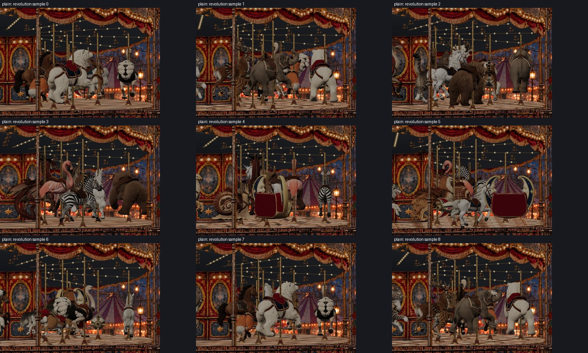
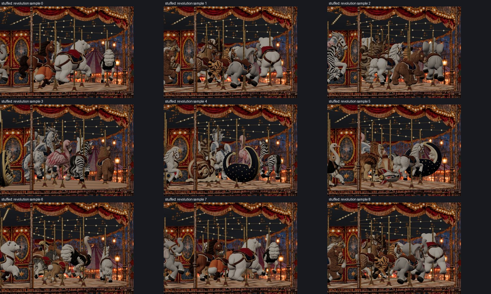
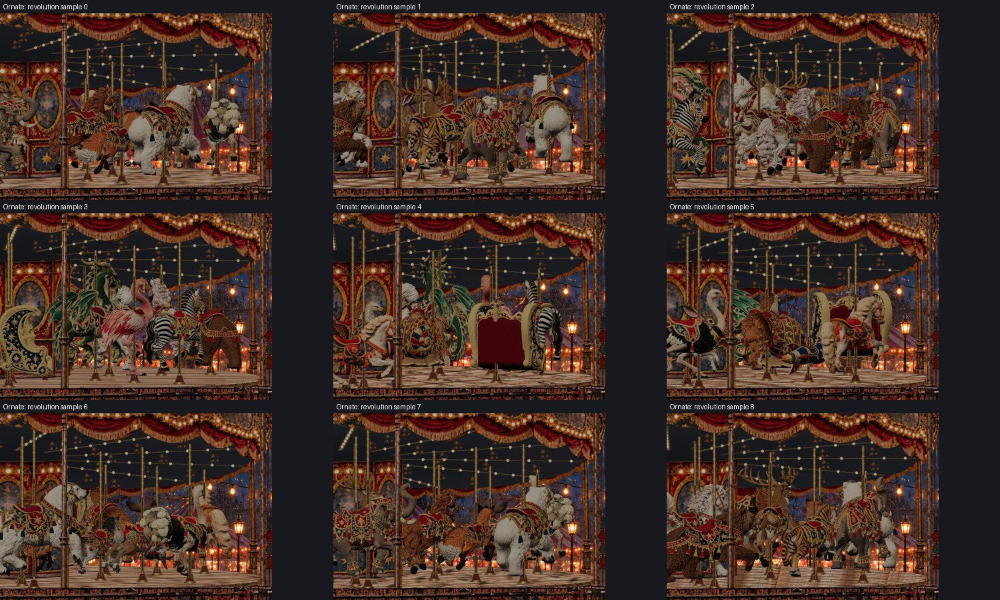

Scope: 20 mounts in each of Plain, Stuffed and Ornate. No GLB, texture, material, slot, ring, bobbing, timing, crop or render-resolution changes. Not deployed.
The depth-tested Three.js shaft previously ended around the body. Below that sleeve, the SVG pole sat behind the whole canvas, making far-side legs incorrectly cover it. The existing shaft now spans the fixed canvas crop. Its ends are outside the crop; its axis, radius, brass material and spiral pitch are preserved. Outside the crop the existing SVG shaft remains in charge. This extends depth coverage, not the total visible carousel pole length. Other poles retain existing SVG ordering.
Only Plain Polar Bear, Stuffed Polar Bear and Stuffed Cat needed local pommel registration corrections. Their values below are variant adjustments, not changes to canonical slot anchors. Two small scale reductions preserve the established crop envelope after adjustment. No yaw changes.
Captured 16 angles per mount/style (960 views per pass), visually reviewed four key angles for all 60 combinations, then recorded more than a full normal animated revolution for each set. Nine scene samples per set were inspected. Automated checks found no registration drift, hidden mounts or disabled depth tests. This is sampled visual inspection, not a guarantee against every mesh self-intersection at every camera angle. Natural changes in which limb is nearer the camera remain correct.
Source limitations retained: Ornate Horse has pre-existing uneven body geometry. Stuffed Rocket has a source-model rear protrusion; it was not forced away with a bad transform. Moon Loveseat uses its dedicated seat/socket arrangement rather than an animal saddle. Existing crowded cross-ring overlaps remain; this pass does not redesign spacing.



Plain and Stuffed both passed: 20 visible mounts, zero wrong-style frames, 20 browser-cache hits per set, and revisit reuse without reparsing. See promoted-loading-results.json in this folder. Original GLB assets are unchanged.
From repository root, run node apps/dreamscapes/build.mjs, serve apps/dreamscapes/dist on port 4204, then open /experiments/carnival/index.html?scene=rides-games. Select age band on the portal. Existing mapping remains Kids/Pre-Teens → Stuffed, Teens → Plain, Adults → Ornate.
Checks: node apps/dreamscapes/verification/pole-audit/verify-depth.mjs; node apps/dreamscapes/verification/verify-variants.mjs; node apps/dreamscapes/verification/pole-audit/revolution.cjs; node apps/dreamscapes/verification/verify-promoted-loading.cjs. Browser scripts accept PLAYWRIGHT_MODULE and BROWSER_EXE environment variables. See revolutions.json and depth-coverage-results.json for measured results. Raw per-angle PNGs are reproducible and ignored; review sheets are tracked.